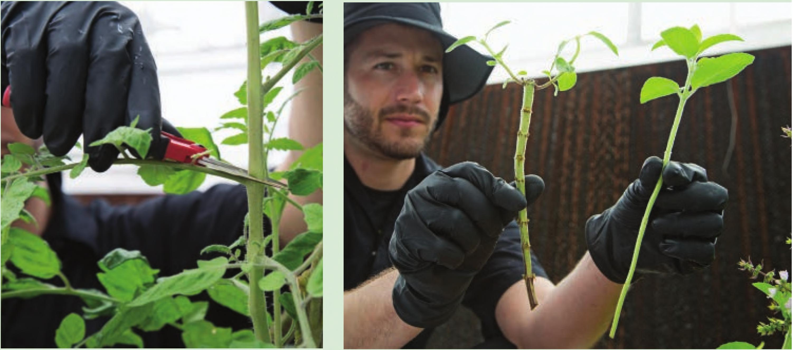

Collecting Cuttings Collecting cuttings is a skill that many struggle with at first. It is very important to collect cuttings from clean plants using clean tools. The ideal environment to root a cutting is also the ideal environment for various plant diseases that can quickly kill or severely weaken cuttings. Before you collect cuttings it is important to wash your hands, pruners, and any containers used to hold the cuttings. Many gardeners prefer to use gloves to prevent contamination from their hands and use alcohol wipes to sanitize pruners. The minimum length required to use a cutting will depend on the rooting technique, but it is generally best to collect longer cuttings (6 inches or more) and cut them shorter later if needed. Remove all the side shoots and leaves so only a few leaves remain at the top of the cutting. Cut just above leaf internodes. When possible, select cuttings that have thick woody stems (left) over weaker thin stems (right). Remove side shoots and leaves. Cuttings only need a few leaves; too many leaves will increase their chance of drying out and dying before establishing roots. Collect more cuttings than needed to give yourself options later. Remove any flowers so the cutting Store cuttings in water during the collection process, can focus its energy on growing roots instead of producing fruit. STARTING SEEDS AND CUTTINGS 141
